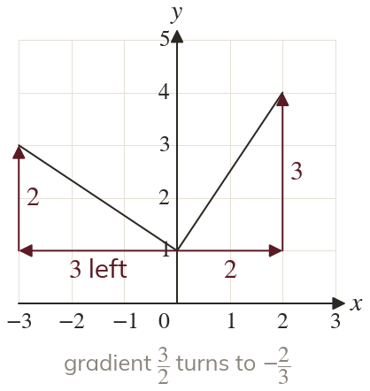
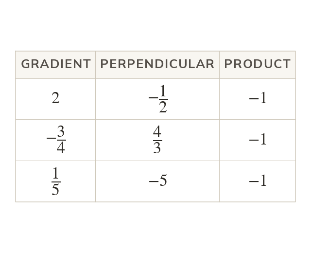
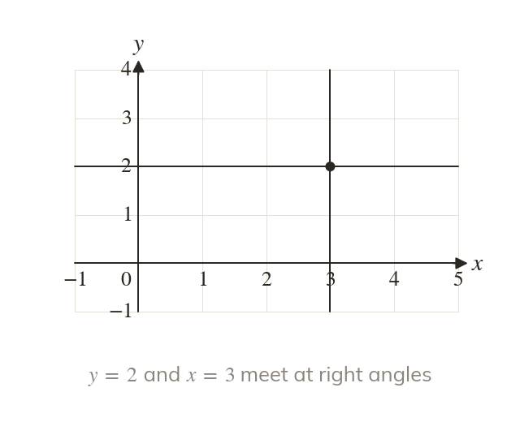
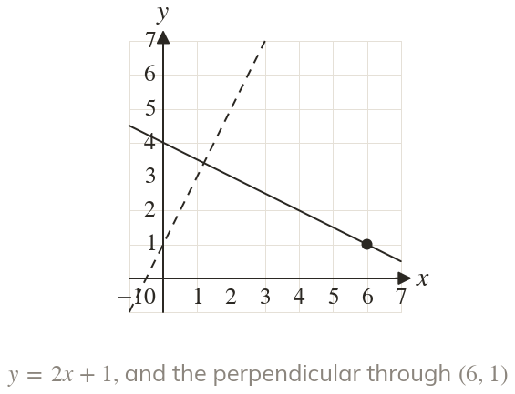
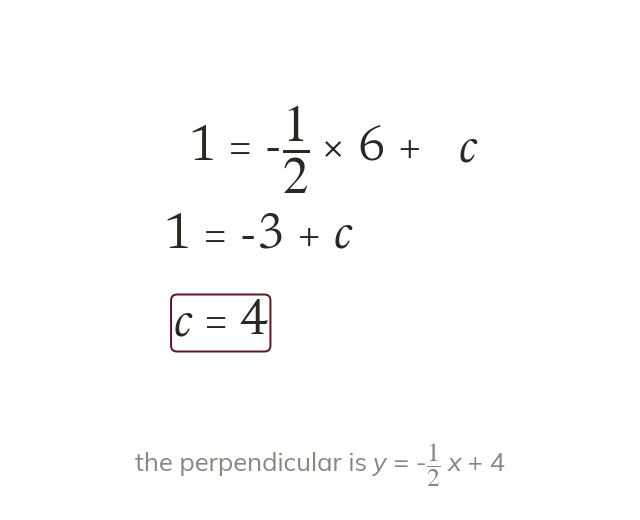

A quarter turn swaps run and rise
Turning a slope triangle through swaps its run and rise. One of them changes sign.
A wall and its floor, a ramp and its support: builders need right angles, and on a plan a right angle is a pair of gradients. Their product is always
Work down the page at your own pace. Write every answer in your book first, then click to check it.
Read each card, then follow the worked examples one step at a time.

Turning a slope triangle through swaps its run and rise. One of them changes sign.

Perpendicular gradients multiply to
So each is the negative reciprocal of the other.

A horizontal line is perpendicular to a vertical one. The product rule fails here, as vertical lines have no gradient.
Pick an answer. If it's wrong, the feedback tells you which mistake it was.
Read each card, then follow the worked examples one step at a time.

The perpendicular line takes the negative reciprocal gradient. Its own point then fixes c.

The point satisfies the new equation. Substituting it leaves one equation for c.
Pick an answer. If it's wrong, the feedback tells you which mistake it was.
Finished? Next lesson: 10H.13.6 Shapes, Bisectors and Tangents on a Grid.
Log in, then search for a code to practise that skill.
Videos, worksheets and more on each part of this lesson.